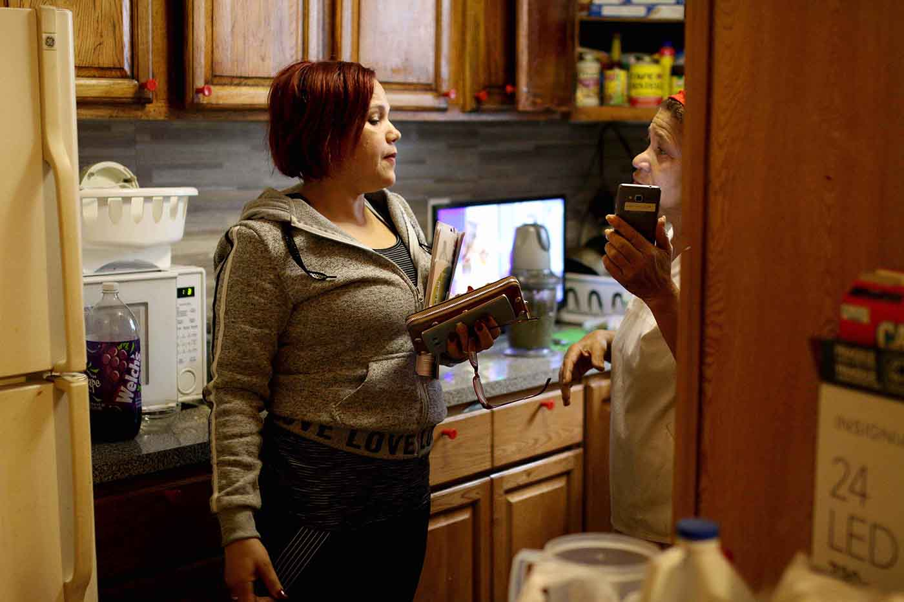
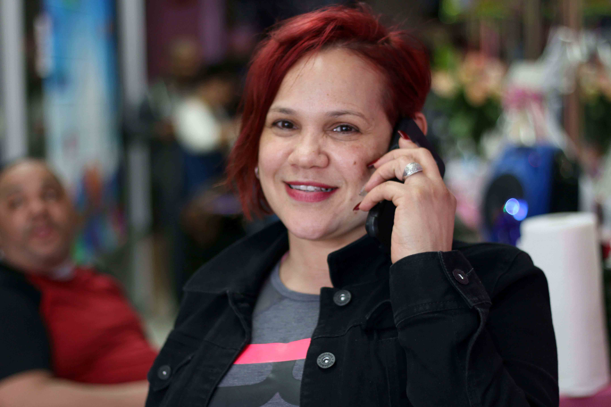
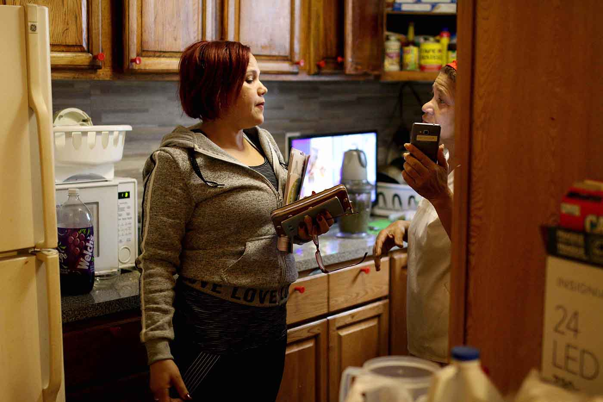
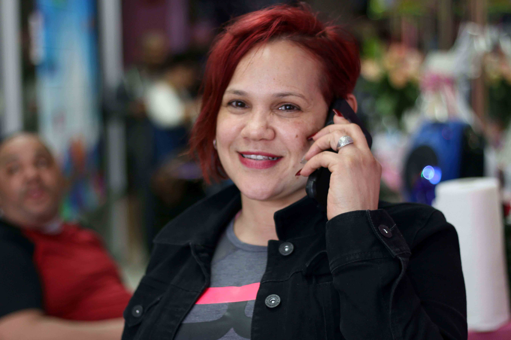

Préstamos en la sombra:
usura, dinero y sueños
en Nueva York
Los prestamistas se aprovechan de la necesidad de efectivo rápido de inmigrantes de bajos ingresos. Dicen que sólo quieren “ayudar”. La historia es más compleja. Intimidación y deudas. El sueño americano en 36 cuotas y 30% de interés.
Los prestamistas de barrio operan en un mercado gris. Aprovechándose de las necesidades urgentes de efectivo rápido de inmigrantes de bajos ingresos, dicen que sólo quieren “ayudar”. La historia es más compleja. Intimidación. Intereses exorbitantes. La banca que le cierra la puerta a los que carecen de historial de crédito. El sueño americano en 36 cuotas. Y 30% de interés.
El libro grande y desteñido de María Ramos, una microempresaria de 64 años de Washington Heights, en Nueva York, registra las peripecias que día a día afronta para sacar a flote su salón de belleza.
Es una agenda de las que regalaron los proveedores de productos de belleza en el 2014 y que se convirtió en su libro de balances. La mujer rubia de la portada no deja de sonreír a pesar de la deuda con prestamistas de barrio que registran las páginas internas y que no se aliviana pese a los pagos semanales.
Se trata de tres créditos que suman $14.000. María Ramos pidió ese dinero a Barbie, Rafael y José María - sus tres banqueros informales – con un interés semanal de 4%. Los nombres de estos personajes son ficticios por petición de la fuente.
“No duermo a veces. Me paso la noche dándole mente a la deuda”, aseguró Ramos sentada en una de las sillas gastadas donde corta el pelo a sus clientas.
Ramos guarda el libro de balances en la repisa saturada de productos de belleza que sirve de zona de trabajo.
Su salón tiene poco lujo. Su inmobiliario es una banca de madera, un par de sillas de oficina y cinco secadores de cabello al estilo casco espacial. En una esquina, dos ollas de hojalata y una hornilla eléctrica sirven para calentar el agua para lavar el cabello de las clientas.
Durante la conversación lo sostiene en su regazo mientras pasa los dedos por los renglones de una página del 25 de diciembre. Allí escribió el nombre de los banqueros informales, la deuda inicial y lo pagado.
¿Cuánto debe?
Hace cuentas mentales. Titubea. Dice que no está segura del saldo actual.
Hasta que, para que la gente alrededor no se entere, señala en silencio hacia una página con la cifra y dice que para mediados de abril, “esto era”.
Para esa fecha, le quedaba por saldar $10.800. Había pagado solo una tercera parte de la deuda abonando unos $2.600 (sumando sus cuotas semanales) durante el 2016.
“Hablé con los prestamistas para hacer un arreglo.”, dijo la peluquera de origen dominicano.

“No duermo a veces.
Dándole mente a
la deuda”, dice
María Ramos.
Ahora le cobrarán una tasa del 3% semanal y menos abono al principal para bajar la cuota mensual. En consecuencia le tomará más tiempo salir del compromiso financiero.
Cuenta que levantó su negocio hace tres décadas y que los banqueros del barrio son quienes siempre han financiado su emprendimiento. Solo una vez solicitó a un banco un préstamo, pero se lo rechazaron porque no tenía un historial crediticio que la respaldara.
“Pedí un préstamo de $10.000, pero lo que me salió fue una tarjeta de crédito por $7.000. Se me fue en este local en gastos del negocio … Le quedé mal al banco por la situación que me ha ido envolviendo”, dijo.
Su historia evidencia el papel y poder de un mercado financiero que opera en la clandestinidad de los barrios de inmigrantes de ingresos bajos.
Los prestamistas de barrio le han dado a Ramos créditos que van de los $2.000 a los $35.000. Siempre ha pagado, dice.
Otros casos reportados, por ejemplo, a la organización Neighborhood Trust - que capacita a personas de bajos ingresos para participar en el sistema financiero estadounidense – muestran que un individuo puede llegar a obtener hasta $900.000 con un prestamista.
16% de interés o más en un
préstamo es ilegal en NY
No hay estudios oficiales sobre el valor del mercado financiero comunitario en Nueva York. No obstante, un sondeo de Washington Heights and Inwood Development Corporation (WHIDC) con pequeños empresarios, realizado hace 21 años, identificó que la banca informal manejaba a unos $10 millones solo en diez cuadras de Washington Heights. Ese monto equivaldría a $18 millones en la actualidad.
WHIDC ofrece microcréditos a pequeños empresarios y capacita a la comunidad sobre el uso de dinero desde 1978. Nueve de cada diez personas que acude a esta organización son de origen latino.
El negocio de los prestamistas se alimenta de las necesidades de personas que no son cubiertas por la banca tradicional. El problema es que los clientes caen en deudas eternas y no desarrollan un historial de crédito que es la puerta al sistema bancario convencional.
Dennis Reeder, director de WHIDC, explicó que las comunidades de inmigrantes encuentran difícil ahorrar dinero para levantar un negocio debido a sus características socioeconómicas.
Video: ve más sobre estos préstamos comunitarios.
"Yo no sé quién podría operar una tienda, estoy hablando de negocios pequeños. Sería imposible para ellos subsistir sin los prestamistas … Por eso utilizan prestamistas”, dijo Reeder.
Los prestamistas son personajes tradicionalmente asociados con violencia y crimen organizado.
Sin embargo, la gente que se dedica a prestar dinero en los barrios también suelen ser vecinos, familiares con dinero de más y amigos de los amigos.
Ivelisse García, una dominicana de 48 años, entró al negocio de prestar dinero hace tres años usando la devolución de sus impuestos. También vive de lo que gana como niñera en Manhattan y como tutora legal de cuatro chicos.
Doña Bella, la prestamista del Bronx
Los clientes de Doña Bella, como se le conoce, son personas tan cercanas como Jorge, su peluquero y gente que su mismo círculo cercano recomienda.
“El negocio me deja una entrada y un sabor dulce en la vida porque me deja hacer cosas para las otras personas”, afirmó.
Su pelo es colorado y sus uñas largas y arregladas. En sus manos suele llevar el celular y las llaves de su carro.
Cuenta que los sábados suele visitar a sus clientes para recoger los abonos de las deudas.Reconoce que el trabajo es pesado porque algunas veces se tiene que poner enérgica con quien le rehúye.
“A veces he tenido que ir un poco guerrera a tocar la puerta”, cuenta.
Por eso, antes de iniciar el recorrido enciende el radio para viajar con el ritmo de la música.
“Mira, te estoy llamando y no coges el teléfono. Estoy escuchando tu voz. Ábreme la puerta”, agrega explicando cómo ha enfrentado ese tipo de situaciones.
Escucha la historia de Doña bella, una prestamista en el Bronx.
Relata que sus clientes la buscan porque necesitan efectivo para pagar la renta, al abogado de inmigración, las vacaciones o cualquier otro gasto imprevisto. Ella cobra un interés mínimo semanal del 20%.
En Nueva York, si se presta dinero con un alto interés - más del 16% mensual - se cae en el terreno de la ilegalidad. Esta es una de las razones por las cuales muchos prestamistas operan en la clandestinidad.
La otra razón es que no hacen negocio con cualquiera. Ese es uno de los pilares del código de la banca de barrio.
Los clientes se eligen porque se conocen o son recomendados por gente de confianza.
 


su negocio. Fotos: Constanza Gallardo
Ese es el caso de la peluquera María Ramos, quien ha tenido relación con siete prestamistas durante sus 30 años como empresaria. Han sido dominicanos y cubanos. Ella no tiene una relación directa con Doña Bella.
Llegó a los banqueros informales referida por amigos. Su historial de crédito en la banca informal depende no solo de que pague a tiempo, sino de qué tan buenos clientes sean sus recomendados. Dos de sus prestamistas cortaron relación con ella por conocidos que quedaron mal.
“Todo está basado en fe y una apretada de manos”, dijo Dennis Reeder, director de WHIDC, que ha escuchado numerosas historias de prestamistas de la voz de individuos que acuden a su organización para educarse en el tema financiero.
Un recorrido por la calle 116 de East Harlem, otro barrio latino de Nueva York, durante un sábado de invierno, confirma el peso del código de confianza para este mercado paralelo.
“Todo está basado en
fe y una apretada de
manos”, dice Dennis
Reeder de WHIDC.
¿Sabe dónde puedo encontrar a un prestamista?, se le pregunta a un vendedor de calle abrigado para mitigar el frío.
La pregunta invariablemente suscita silencio o una risa nerviosa.
“Sé que hay pero no sé dónde … no te van prestar porque no te conocen”, responde el hombre con acento caribeño y quien comercializa productos de limpieza y casa.
Caminar por la calle 116 de East Harlem es como hacer un recorrido en un barrio de clase trabajadora en América Latina. La necesidad de dinero obliga a los vendedores ambulantes a pararse por horas a la intemperie para cazar alguna que otra compra.
La estrategia de los comercios es la música y los carteles de oferta. La demanda de dinero en efectivo se refleja por las casas de empeño que se asoman en las cuadras.
Un reporte de U.S. Financial Diaries (USFD) explica que las instituciones bancarias tradicionales no han podido replicar las características de la banca informal, ni consideran cómo este segmento de clientes toman decisiones financieras. Se trata de un estudio de investigación que recoge datos financieros de 235 hogares de ingresos bajos y moderados en el país durante el transcurso de un año.
Abrir una cuenta bancaria o pedir un préstamo requiere de una serie de papeles y requisitos que las comunidades migrantes no tienen: desde un documento de identificación hasta un historial de crédito.
El informe de USFD confirma que los préstamos entre familiares y amigos son la segunda opción más común de crédito en este país.
“Muchos de ellos (inmigrantes) vienen de países donde su dinero está más seguro debajo del colchón que en un banco”, Reeder.
Este es el caso de María Mendoza, de 56 años y residente del Bronx. Ella tiene una cuenta de ahorros, pero nunca ha solicitado un crédito bancario.
Esta boricua ha sido cliente de prestamistas de barrio por 15 años y de esos préstamos obtiene el dinero que deposita en su cuenta de ahorro.
“Mi mamá está en Puerto Rico y guardo dinero para una emergencia”, dice Mendoza, quien detalla que su hija trabaja en el banco y maneja su cuenta.
Hoy tiene ahorrado $5.000. “Sí vale la pena acudir al prestamista. Creo que son intereses más bajos que un banco”, agregó.
Uno de los lados oscuros de los prestamistas es que ignoran la capacidad financiera de sus clientes. Eso genera niveles de endeudamiento que se vuelven inmanejables porque algunos clientes se comprometen con más de un préstamo.
María Ramos, la empresaria que siempre se ha apoyado en la banca informal, pagaba un poco más de $2.600 a sus tres prestamistas en abril. Una sexta parte de ese monto ($486) corresponde a intereses.
Incluso a uno de ellos solo le ha podido abonar los intereses semanales ($90) desde el año pasado, por lo que tiene intacta la deuda de $3.000.
“Los intereses de los préstamos informales están fuera de control. Los periodos de pago son agresivos.Hay casos de clientes que pagan 300% de interés solo porque sí (mediante una fijación arbitraria)”, expresó Eric Espinoza asesor de la organización Neighborhood Trust.
45 millones de personas
no tienen historial
crediticio en EE.UU.
En un banco convencional como Citibank, Ramos pagaría una cuota de $350 cada mes por un préstamo de entre $10.000 y $14.000. Este es un estimado que depende del historial crediticio que se construye con el historial de pago, las deudas pendientes y tipos de créditos utilizados en el pasado.
Cuando un individuo no aparece en la base de datos de las oficinas de crédito - que guardan la información de los bancos – pierde oportunidades para comprar un carro, una casa o pedir un préstamo para crear un negocio.
Una población de 45 millones de personas (equivalente a la población total de Colombia) carecía de historial de crédito en el 2015 en Estados Unidos.
Los estudios de la Oficina de Protección Financiera del Consumidor, que emite este dato, evidencian que un 15% de ese grupo invisible son hispanos y afroamericanos, mientras solo 9% es anglosajón.
Otra característica que tiene este mercado informal es la presión que los banqueros de barrio tienen sobre sus clientes.
Por ejemplo, María Mendoza cuenta que hace unos años su hermano hizo un trato con un prestamista gracias a que los presentó. El prestamista murió tiempo después y su hermano decidió abandonar el compromiso.
El problema surgió cuando el hijo delivery fallecido retomó los cobros.
Mendoza cuenta que dos personas le tocaron la puerta un tiempo después.
Mendoza la abrió. Del otro lado había “dos viejos fuertones”. Eran dos cobradores que usaban gorras con la bandera Puerto Rico enviados por el hijo del prestamista, uno chaparro y el otro era más grande.
Habían venido a cobrar la deuda de su hermano. Le pidieron su dirección. Ella se negó.
Según Mendoza uno de los cobradores le lanzó una advertencia.
“‘Entonces, cuando yo lo vea por ahí, va a ver’. Ella dice que le dio coraje y los confrontó: “ah pero esa amenazas son palabras fuertes”.

(foto: Monica Cordero y Constanza Gallardo)
En Washington Heights, Maria Ramos confiesa sentirse más comprometida en pagar la cuota semanal a sus tres prestamistas que pagar su tarjeta de crédito porque no quiere problemas con los banqueros.
“La presión es que se te para (el prestamista) aquí (señala la puerta del local). Viene a buscar tu dinero y en caso de que no tengas para pagarle, te hace un escándalo”, dijo.
La manera de salir del círculo de la banca informal pasa por tener más conocimiento sobre el sistema bancario estadounidense y crear un historial de crédito con el tiempo.
El programa de educación financiera de la ciudad, conocido como Financial Empowerment Center, ayuda a la gente a conectarse con el sistema bancario formal.
“Vale la pena ir con
prestamistas. Creo
que son intereses más
bajos que un banco”,
dice María Mendoza.
No obstante, la necesidad de dinero rápido y los problemas para cumplir requisitos en la banca formal siguen alimentando al mercado de prestamistas.
Eric Espinoza considera importante crear estrategias para transmitir información “boca a boca” sobre los casos de personas que han logrado salir de las deudas de prestamistas. Este mecanismo aprovecharía los canales de las comunidades y crearía confianza.
No obstante, situaciones como la que enfrenta la microempresaria María Ramos la obligan a seguir teniendo una relación con los prestamistas a pesar de los riesgos.
Ella cuenta que solicitó un préstamo a WHIDC, organización que promueve la educación financiera, para saldar las deudas con sus tres prestamistas y la tarjeta crédito.
No obstante, María Ramos ya está haciendo otro plan. Invertirá esa plata en su salón.
“Si yo puedo poner el negocio donde pienso ponerlo, voy a trabajar más … Quizás voy a ganar nuevos clientes”, aseguró.
Como otros miembros de la comunidad latina prefiere endeudarse más. Es una apuesta al futuro que hará por su negocio.
Ella asegura que no puede quejarse de los banqueros de barrio porque le han “resulto toda la vida” y mientras esta idea persiste este mercado gris seguirá teniendo clientes.